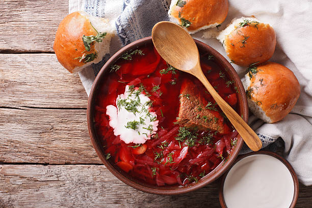

Ласкаво просимо!
Українська кухня — одна з найсмачніших та найрізноманітніших у світі. Тут ви знайдете інформацію про традиційні страви, рецепти, медіаматеріали та багато іншого.
| Назва | Опис |
|---|---|
| Борщ | Традиційний борщ- рідка страва, що вариться з різноманітних овочів і має безліч варіантів приготування, поєднаних квасним смаком. |
| Вареники | Вареники — українська національна страва у вигляді відвареного прісного тіста з начинкою (вишні, картопля, сир). |
| Голубці | Голубці- Страва готується з листя свіжої чи кислої капусти та начинки з м'яса, рису чи гречки, кукурудзяних чи пшоняних круп, картоплі, квасолі, грибів, цибулі, моркви та прянощів. |